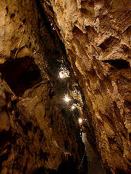

| In Deutsch |
| In Deutsch |
Sturmannshöhle - Sturmartzloch
Sturmann's Cave
Useful Information
 |
| Image: entrance of the Sturmannshöhle. |
| Location: | A7 exit Kempten, B19 direction Oberstdorf, in Fischen turn right, 2km to Obermaiselstein. 1,5km south of Obermaiselstein. About 30 mins walk from Obermaiselstein or Hirschsprung. (84,Lb64) |
| Open: |
26-DEC to Sunday after Easter 11-16, hourly on the full hour. MAY to OCT daily 9:30-16:30, hourly on the half hour. [2006] |
| Fee: | Adults EUR 3, Children (6-14) EUR 1,50, Children (0-5) free, Allgäu-Walser-Card EUR 2,50. [2006] |
| Classification: |
|
| Light: | electric |
| Dimension: | L=287m, VR=74m, A=978m asl. |
| Guided tours: | L=460m, St=180, VR=60m, D=45min, V=45,000/a [200?]. |
| Photography: | |
| Accessibility: | |
| Bibliography: | J. Tauser (1955): Sturmannshöhle, der Schwarzenberg, Obermaiselstein, unweit Oberstdorf im Allgäu, Kempten 1955 Heinz Jürgen Goeres, Alexander Müller: Sturmannshöhle im Schwarzenberg bei Obermaiselstein, Obermaiselstein. |
| Address: |
Höhlentelefon (cave phone), Tel: +49-8326-38309 Kassenkiosk (for appointments), Tel: +49-8326-385053. Obermaiselstein Tourismus, Am Scheid 18, 87538 Obermaiselstein, Tel: +49-8326-277. |
| As far as we know this information was accurate when it was published (see years in brackets), but may have changed since then. Please check rates and details directly with the companies in question if you need more recent info. |
|
| Last update: | $Date: 2015/11/20 13:16:58 $ |
History
 |
| Image: view from the cave entrance. |
| 1815 | first written report by Dr. Geiger about an attempt to enter the cave. | |
| 1854 | exploration attempt. | |
| 2506 | exploration attempt. | |
| 1904 | explored to the cave lake by the teacher Franz Xaver Epplen from Obermaiselstein. | |
| 1905 | developed by the new founded Höhlenbauverein. | |
| 1906 | opened to the public. | |
| 1965 | diving attempt in the cave lake by A. Wunsch. |
Description
The Sturmannshöhle (Sturmann's Cave) is located above the village Obermaiselstein, at the foot of the nördliche Kalkalpen (northern limestone Alps). The walk from the village to the cave takes about 30 minutes. A road leads up to the ticket office and restaurant, from here it is 10 to 15 minutes to the cave entrance. The entrance portal is located in a vertical cliff face, the road goes up to the foot of the cliff in serpentines, then a roofed wooden catwalk leads to the cave entrance.
|  |
| Image: typical profile of the cave, a narrow cleft. |
The rocks around the Sturmannshöhle, locally called Schrattenkalk, are fossil rich limstones from the Cretaceous. They were rotated by the orogeny of the Alps a little more than 90°, so the cave was formed along a layer boundary, not along a tectonic cleft. Nevertheless the cave is called a fissure cave, with a typical narrow and high profile all along.
In the rear part of the cave, about 60m below the entrance, a cave river is flowing. This lower and still active part is not explored, as it is completely submerged and narrow. The water reappears in the Fellbachsursprungshöhle. This was found out by dye tracing experiments. The karst spring has a production of of 15l/s in average, the water a has a temerature of 4-6°C.
The lower part of the cave has no lower entrance, because of this it forms a cold trap. Because of the high altitude outside temperatures are rather low too, and so this part is much colder than the rest of the cave. As long as the cave was visited there was a small amount of ice at the deepest point of the cave, probably a few cubic meters. A pollen analysis determined its age to be about 20,000 years. This is the time of the las ice age, locally called Würm-Eiszeit. During the last years this ice melted completely.
The cave name is derived from the Medieval word Sturmatz, which means noise or roar. There are numerous legends around the cave. One tells about a treasure deep inside the cave which is guarded by a dragon. Another legend tells about four wild ladies, wich lived in the cave and the nature around. In the last years the path from the ticket office to the cave was transformed into a fairy tail path. Huge boards with the legends along the trail make the rather strenuous ascend a little more pleasant.
 |
| Sturmannshöhle Gallery |
 Index: Caves With a View
Index: Caves With a View Search Google for "Sturmannshöhle"
Search Google for "Sturmannshöhle" Google Earth Placemark
Google Earth Placemark Sturmannshöhle,
official website.
Sturmannshöhle,
official website.